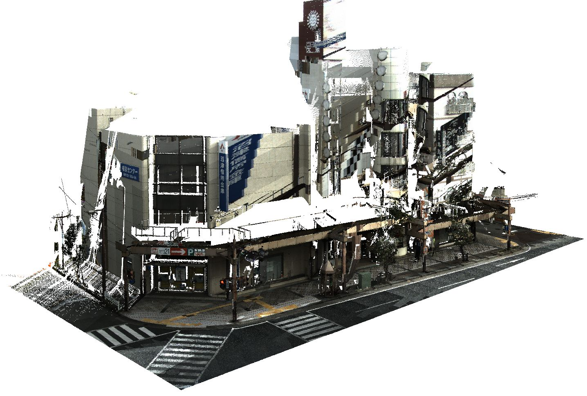
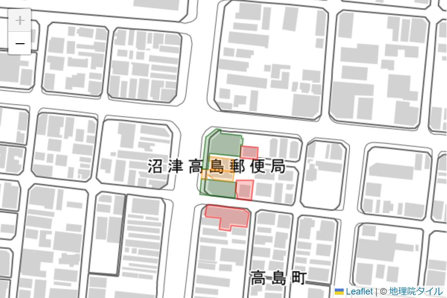
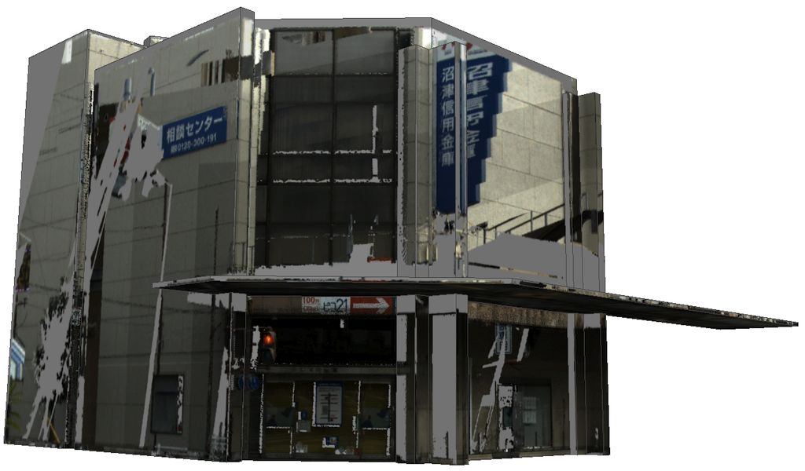

FY2022 Project PLATEAU UC22-008「3D都市モデルを基礎としたIDマッチング基盤」の成果物（Building matching WebAPI）
1. 概要
本ソフトウェアは、2D 地図データおよび 3D 点群データを 3D都市モデルの建物データと突合し、建物 ID との関連付けを行うWebAPI 機能を提供するサービスアプリケーションです。
以下の機能を提供します。
- 2D 建物マッチング機能: 2D 建物ポリゴンを 3D都市モデルの建物データにマッチングします。
- 3D 点群マッチング機能: 3D 点群データを 3D都市モデルの建物データにマッチングします。
- 3D テクスチャマッピング機能: 3D 点群データを 3D都市モデルの建物データのテクスチャとして マッピングします。
2．「3D都市モデルを基礎としたIDマッチング基盤」について
ユースケースの概要
近年、地理空間情報の活用が活発になる一方、建物や土地に関する様々な情報が別個に存在し、統合が進んでいないため、総合的、複合的なデータ分析の課題となっています。 今回の実証実験では、3D都市モデルの幾何形状を基礎データとして多様な地理空間情報をマッチング処理し、建物IDを介したデータ結合を行う基盤を構築することで、様々な地理空間情報の統合を促進します。
開発システムの概要
2D 建物マッチング機能
機能概要
GeoJSON ポリゴンで表現された 2D 建物データを問い合わせとして送信すると、 対応する 3D都市モデルの建物データを GeoJSON 形式で返します。
次の画像は WebAPI デモアプリケーションでの実行例です。

検索したい建物群（リクエスト）がオレンジ色、それに一致すると判断された 3D都市モデルの建物データ群（レスポンス）が緑色で表示しています。 レスポンスの個々の建物には、リクエストの建物が持つ属性情報が渡されます。
API 詳細
WebAPI「2D 建物マッチング機能」 を参照してください。
3D 点群マッチング機能
機能概要
LAS フォーマット の 3D 点群データファイルを問い合わせデータとして送信すると、その点群に 対応する 3D都市モデルの建物データのリストと、点群がそれぞれの建物表面を カバーする面積を 2D GeoJSON 形式で返します。
次の画像は WebAPI デモアプリケーションでの実行例です。
 1枚目画像の点群データをリクエストとして送ると、この点群に含まれていると 判断された 3D都市モデルの建物データ群が2枚目画像に示したポリゴンとして返されます。 レスポンスの個々の建物には、建物表面付近に点群データが存在する面積と 建物のモデルから計算した表面積が属性情報として渡されます。
図で緑色に表示されている建物は表面の40%以上に点群データが存在しているもの、 オレンジ色は 20% 以上、赤色は 20% 未満を表しています。
API 詳細
WebAPI「3D 点群マッチング機能」 を参照してください。
3D テクスチャマッピング機能
機能概要
3D 点群データと 3D都市モデルの建物データの ID を問い合わせデータとして送信すると、 その建物に点群データから生成したテクスチャをマッピングした 3D都市モデルデータを Wavefront OBJ 形式 のファイルとして返します。
次の画像は WebAPI デモアプリケーションでの実行例です。
1枚目画像の点群データと 3D都市モデルの建物データの ID をリクエストとして送ると、 この点群データから建物表面付近の点を選択して、それぞれの壁面の テクスチャ画像を作成します。
実際に返されるのは Zip 形式のファイルで、中には 3D都市モデルの建物データのモデルから作成した OBJ ファイル、面と画像の関係を管理する MTL ファイル、 および面ごとのテクスチャ画像ファイル（PNG）が含まれます。
API 詳細
WebAPI「3D テクスチャマッピング機能」 を参照してください。
3．利用手順
インストール方法・使い方はこちら
ライセンス
- ソースコードおよび関連ドキュメントの著作権は国土交通省に帰属します。
- 本ドキュメントはProject PLATEAUのサイトポリシー（CCBY4.0および政府標準利用規約2.0）に従い提供されています。
注意事項
- 本レポジトリは参考資料として提供しているものです。動作保証は行っておりません。
- 予告なく変更・削除する可能性があります。
- 本レポジトリの利用により生じた損失及び損害等について、国土交通省はいかなる責任も負わないものとします。
参考資料
- 3D都市モデルを基礎としたIDマッチング基盤技術検証レポート: https://www.mlit.go.jp/plateau/libraries/technical-reports/
- PLATEAU Webサイト Use caseページ「3D都市モデルを基礎としたIDマッチング基盤」: https://www.mlit.go.jp/plateau/use-case/uc22-008/
主なライブラリ
- GDAL : https://gdal.org/
- GeoAlchemy2 : https://pypi.org/project/GeoAlchemy2/
- GeoPandas : https://geopandas.org/en/stable/
- laspy : https://laspy.readthedocs.io/en/latest/index.html
- Leaflet : https://leafletjs.com/
- NumPy : https://numpy.org/
- Open3D : http://www.open3d.org/
- Pillow : https://pillow.readthedocs.io/en/stable/
- PostGIS : https://postgis.net/
- PostgreSQL : https://www.postgresql.org/
- SciPy : https://scipy.org/
- Shapely : https://pypi.org/project/shapely/